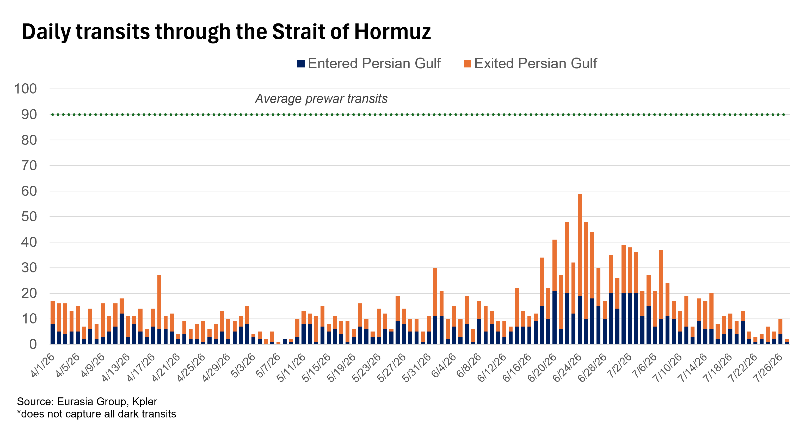
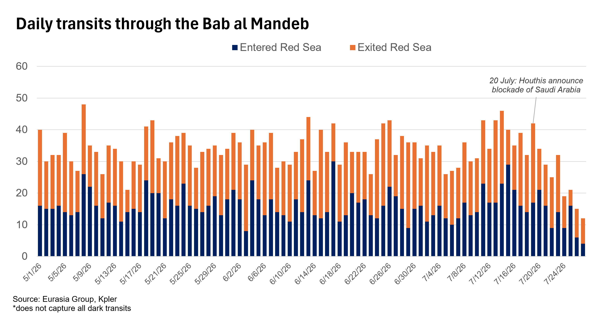

|
 |
|||
|
||||
|
||
US-Iran escalation risk will drive price volatility. Brent crude rose above $100 per barrel late last week after reports indicated that the US was preparing for a significant escalation in its confrontation with Iran. Prices then fell just as sharply over the weekend and into Monday, with Brent dropping below $90 as US paused strikes on Iran amid reports of possible diplomatic progress. Without clear de-escalation, tensions and market volatility will remain high because US could escalate with little warning. Prices will likely stay in a $75-$95 per barrel range, while escalation could push them to $90-$110 due to the risk of damage to regional infrastructure (see: Escalation likely as Iran sees a path to controlling Hormuz, 16 July 2026). Transits through the Strait of Hormuz will remain depressed. Although the US has held off on more intensive bombing of Iran, risks to shipping in the strait remain acute. As a result, shippers are holding off on transits, with ship-tracking firm Kpler confirming only a few passages per day. Along with the drop in shipping volumes, Middle East oil flows have fallen back to levels seen before the late June US-Iran deal briefly reopened the strait. Shipping firms expect the status quo to persist for at least the next three to six weeks. Despite the ongoing confrontation between the US and Iran, an international naval task force has continued minesweeping operations in the central waterway, while the US is still offering escort services for ships willing to transit along the southern route near Oman’s coastline.  Houthi disruption in the Red Sea will scramble Saudi oil flows. The Houthi declaration of a “maritime blockade” of Saudi Arabia early last week (see: Houthis likely to launch limited attacks to extract Saudi payoffs, 20 July 2026) has disrupted shipments of Saudi oil through the Bab al Mandeb. However, as Eurasia Group anticipated, the disruption has not shut traffic through the waterway, though the number of passages has notably declined since the Houthi declaration on 20 July. Non-Saudi oil shipments continue, and some Chinese-linked ships carrying Saudi oil have passed without incident. Saudi Arabia can continue to export oil from the Yanbu terminal through the more circuitous and more costly Suez Canal route. Houthi action will add pressure to prices, but it will not cause a Hormuz-style supply shutdown.  Sporadic disruptions to Kazakh exports will add to price pressures. The Caspian Pipeline Consortium (CPC), which handles more than 1.5 million barrels per day of Kazakh exports, briefly shut down due to Ukrainian attacks on Russian tanker traffic. Although Eurasia Group did not expect the shutdown to last (see: Prices will rise further as multiple geopolitical conflicts tighten the market, 20 July 2026), the risk of further short-term disruptions will likely remain elevated as Ukraine continues to target Russian energy infrastructure. |